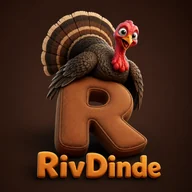

1 · La marque
Une dinde en rendu 3D perchée sur un « R » en peluche, et le mot-symbole en lettres pleines. Le « R » est ton initiale ; la dinde est la mascotte. C'est un logo que personne d'autre n'a — et en entretien, un projet dont on se rappelle l'image vaut mieux qu'un projet de plus.
Signature d'accompagnement, quand le nom seul ne suffit pas : RivDinde — commander, livrer, suivre.
2 · Deux objets, jamais un seul
C'est la règle de toute marque à mascotte, et elle n'est pas négociable : plus une image est détaillée, moins elle survit en petit. Regarde la dinde à 16 pixels ci-dessous, puis le monogramme à la même taille.

mascotte · 96 pxillisible
net
Qui sert à quoi
| Objet | Où | Pourquoi |
|---|---|---|
| La mascotte | Écran d'accueil, page de connexion, écran de démarrage du mobile, en-tête du dépôt, e-mails | C'est elle qu'on retient. Au-dessus de 96 pixels, tous ses détails travaillent |
| Le monogramme | Onglet du navigateur, icône de l'application, navbar, avatars, listes | Trois traits, deux couleurs : il ne perd rien en rétrécissant, et il ne coûte aucun téléchargement |
3 · Les fichiers, et ce qu'ils pèsent
Le fichier d'origine faisait 1,98 Mo. Une page qui embarque deux mégaoctets de logo met plusieurs secondes à s'afficher sur un téléphone : c'est exactement le genre de détail qu'un recruteur remarque sans le nommer.
| Fichier | Taille | Poids | Usage |
|---|---|---|---|
04-maquettes/marque/rivdinde-logo-source.png | 1254 px | 1,98 Mo | La source. Ne jamais la servir sur le web — c'est d'elle qu'on régénère tout le reste |
frontend-web/public/logo-rivdinde-512.webp | 512 px | 28 Ko | Écran d'accueil, grandes surfaces |
…/logo-rivdinde-256.webp | 256 px | 9 Ko | Écrans intermédiaires |
…/logo-rivdinde-192.webp | 192 px | 6 Ko | Petits affichages, téléphones |
…/logo-rivdinde-512.png et -192.png | 512 / 192 | 322 / 48 Ko | Repli pour ce qui ne lit pas le WebP : icône Android, aperçus de partage |
frontend-web/public/favicon.svg | vectoriel | 0,6 Ko | Onglet du navigateur — le monogramme |
Soixante-dix fois plus léger, sans différence visible :
le WebP compresse bien mieux le PNG pour ce type d'image. Le composant
LogoRivDinde.vue déclare les trois tailles en srcset,
et le navigateur prend celle qui correspond à son écran au lieu de charger la
plus grande pour la réduire.
Régénérer les déclinaisons
Si la source change, une seule commande depuis backend/
avec Pillow (déjà installé) suffit à tout refabriquer — le script est conservé
dans le dossier marque/.
4 · Les couleurs
Elles ne sont pas choisies : elles sont échantillonnées dans le logo lui-même. C'est ce qui garantit que l'interface et l'image s'accordent au lieu de se supporter.
74 % de l'image
ombres du R
le R en nounours
bordures, survols
l'orange du mot
sur fond sombre
#ea580c, trop proche de l'orange de la marque. Deux
oranges voisins, l'un qui dit « la marque » et l'autre « tu es dans l'espace
gestionnaire », s'annulent. Le Gestionnaire passe au sarcelle
#0d9488 — libre, lisible sur les deux fonds, distinct des
quatre autres accents. Les maquettes et les contrats sont déjà à jour.
Les cinq accents de rôle (client vert, vendeur bleu, gestionnaire
sarcelle, livreur violet, admin rouge) restent inchangés par ailleurs :
ils disent où l'on se trouve, la marque dit chez qui l'on est.
Voir design-system.md § 2.
5 · Ce qu'on fait, ce qu'on ne fait pas
| Règle | Pourquoi |
|---|---|
| Mascotte au-dessus de 96 px, monogramme en dessous | C'est la seule règle qui compte vraiment |
| Coins arrondis (18 px) sur la mascotte | Son fond est opaque : sans arrondi, elle fait « image collée » |
| Zone de protection égale à la moitié de sa hauteur | Un logo collé à un bord perd son autorité |
| Servir le WebP, garder le PNG en repli | 28 Ko contre 322 Ko pour le même rendu |
Jamais servir rivdinde-logo-source.png sur le web | Deux mégaoctets pour un logo |
| Jamais déformer, incliner, ajouter une ombre portée | Le relief est déjà dans l'image ; en rajouter la salit |
| Jamais poser la mascotte sur une photo ou un aplat vif | Son fond brun entre en conflit — utiliser le monogramme |
| Jamais recolorer la mascotte | C'est un rendu, pas un pictogramme. Le monogramme, lui, se teinte |
6 · Le monogramme, à copier tel quel
C'est le contenu de frontend-web/public/favicon.svg,
et celui du composant LogoRivDinde.vue en variante
symbole. Aucune image à charger, aucune requête réseau.
<svg viewBox="0 0 64 64" xmlns="http://www.w3.org/2000/svg">
<defs>
<linearGradient id="fond" x1="0" y1="0" x2="0.6" y2="1">
<stop offset="0" stop-color="#3d2016"/><stop offset="1" stop-color="#2a160f"/>
</linearGradient>
<linearGradient id="lettre" x1="0" y1="0" x2="0.3" y2="1">
<stop offset="0" stop-color="#f0a344"/><stop offset="1" stop-color="#d46f1d"/>
</linearGradient>
</defs>
<rect width="64" height="64" rx="15" fill="url(#fond)"/>
<g fill="none" stroke="url(#lettre)" stroke-width="9.5"
stroke-linecap="round" stroke-linejoin="round">
<path d="M21 14 V47"/> <!-- la hampe -->
<path d="M21 14 H31 A10 10 0 0 1 31 36 H21"/> <!-- la boucle -->
<path d="M30 35 L42 47"/> <!-- la jambe -->
</g>
</svg>
Le « R » n'est pas une police : ce sont trois traits épais aux
extrémités arrondies. Il s'affiche donc à l'identique sur toutes les machines,
là où un <text> dépendrait des polices installées.
7 · Annexe — la piste écartée
Colibri, ma proposition du bloc D — pour mémoire
Je proposais Colibri : les quatre premières lettres écrivent colis, l'oiseau est le plus rapide et le seul à savoir faire du surplace — l'Express et le Standard dans un seul mot. Le symbole était un colis isométrique d'où s'échappait une aile.
Deux arguments ont emporté la décision contre lui : tu avais déjà l'image de RivDinde en tête, et le nom porte ton prénom. Un logo qu'on a voulu vaut mieux qu'un logo qu'on a accepté.
Ce que j'avais signalé et qui reste vrai : en français, « dinde » s'emploie comme insulte légère, et le nom sera lu avant d'être expliqué. Tu l'as tranché en connaissance de cause — c'est écrit ici pour que la question ne revienne pas.
La palette turquoise de Colibri a servi à quelque chose : elle a libéré l'orange pour la marque, ce qui a entraîné le passage du Gestionnaire au sarcelle (§ 4).